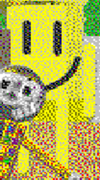

"Sir Smiles" (or just "SS") would have been the Arts and Crafters replacement in the unfinished Baldi's Basics mod known as "Kadens Fun House Of Objects!"(/"KFHOO").
Aliases
Sir Smiles, SS, Smiles.
Appearance
Sir Smiles appears as a poorly modeled human-like. His whole body is yellow, instead of having a head his face is on his chest, said face is a large smiley face.
Gallery

Trivia
Sir Smiles is a part of a monotreme species known as "Smilers".
Sir Smiles has one known family member, "Mr. Smiles".
Sir Smiles is able to make anyone happy simply by touching them.